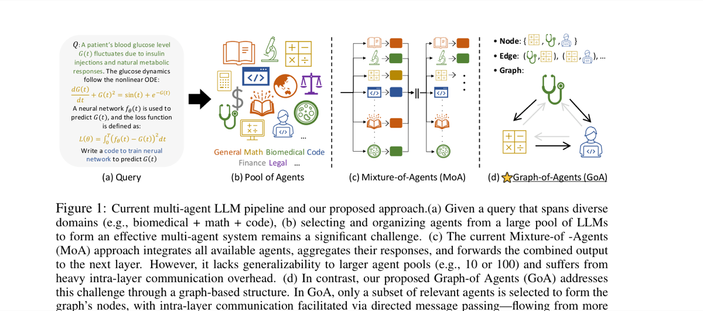

Why it matters왜 중요한가
As the "LLM zoo" grows, the question is not how to use more models, but which ones to route a query to — and how they should talk.
"LLM 동물원"이 커질수록, 핵심은 모델을 더 많이 쓰는 게 아니라 어떤 모델에 질문을 보내고 그들이 어떻게 대화하느냐다.
MoA-style frameworks have three structural weaknesses: they forward queries to all agents regardless of relevance (cost + noise), they aggregate responses as a single undifferentiated chunk (no one-to-one weighting), and they integrate by concatenating every agent's tokens (expensive, treats all agents as equal). GoA attacks all three by making the communication topology itself a function of the query: only relevant agents become nodes, directed edges encode who should influence whom, and pooling prioritizes the most-trusted agent. It works purely through the prompt interface, so it runs on black-box APIs with no fine-tuning.
MoA류 프레임워크의 구조적 약점은 셋이다: 관련도와 무관하게 모든 에이전트에 질의를 뿌리고(비용+잡음), 응답을 구분 없는 한 덩어리로 모으고(1:1 가중 없음), 모든 에이전트의 토큰을 이어 붙여 통합한다(비싸고 모두를 동등 취급). GoA는 통신 위상 자체를 질문의 함수로 만들어 셋을 동시에 친다: 관련 있는 에이전트만 노드가 되고, 방향 엣지가 누가 누구에게 영향을 줄지 인코딩하며, 풀링은 가장 신뢰받는 에이전트를 우선한다. 프롬프트 인터페이스만으로 작동해 블랙박스 API에서 파인튜닝 없이 돌아간다.

By the numbers핵심 숫자
vs. baselines (it still wins)GoA가 쓴 에이전트
vs 베이스라인 6개 (그래도 우위)
vs MoA's 56.1k (~−66%)GoA_Max 토큰
vs MoA 56.1k (~−66%)
vs MoA's 240s (~−58%)GoA_Max 지연
vs MoA 240s (~−58%)
vs MoA's 19GoA_Max LLM 호출
vs MoA 19
vs MoA 53.33GoA_Max MMLU-Pro 정확도
vs MoA 53.33
(7–8B LLMs)에이전트 풀 도메인 수
(7–8B LLM)
Results — fewer agents, better answers, less cost결과 — 더 적은 에이전트, 더 나은 답, 더 적은 비용
| Method | Accuracy | LLM calls | Tokens | Latency |
|---|---|---|---|---|
| MoA | 53.33 | 19 | 56.05k | 240.26s |
| GoA_Mean | 54.27 | 12 | 22.58k | 118.52s |
| GoA_Max | 54.78 | 11 | 19.18k | 100.43s |
| Benchmark | Best variant | Score |
|---|---|---|
| MMLU | GoA_Max | 79.18 |
| MMLU-Pro | GoA_Max | 54.78 |
| MedMCQA | GoA_Max | 60.04 |
| GPQA | GoA_Mean | 40.54 |
| MATH | GoA_Mean | 73.12 |
| HumanEval | GoA_Mean | 84.98 |
In one diagram한 장의 그림
The core idea: communication topology as a graph핵심 아이디어: 통신 위상을 그래프로
Node & edge sampling노드·엣지 샘플링
A Meta-LLM (Qwen2.5-7B-Instruct) reads summarized Hugging Face model cards (domain, task, size) and Top-k selects the agents that fit the query. Selected agents then score each other's drafts (correctness, coherence, relevance); received scores form a weighted directed adjacency matrix, and agents scoring below τ are pruned.
Meta-LLM(Qwen2.5-7B-Instruct)이 요약된 Hugging Face 모델 카드(도메인·태스크·크기)를 읽고 질의에 맞는 에이전트를 Top-k로 고른다. 선택된 에이전트들은 서로의 초안을 상호 채점(정확성·일관성·관련성)하고, 받은 점수로 가중 방향 인접행렬을 만들며 τ 미만은 가지치기한다.
Bidirectional passing + pooling양방향 패싱 + 풀링
Messages flow source→target (strong agents refine weaker ones), then target→source (sources absorb the improved consensus). Final answer is read off by Max-pooling (most-incoming-edges node) or Mean-pooling (Meta-LLM weighted-merges all refined responses).
메시지는 source→target(강한 에이전트가 약한 쪽을 정제) 후 target→source(source가 개선된 합의를 흡수)로 흐른다. 최종 답은 Max-풀링(들어오는 엣지가 가장 많은 노드) 또는 Mean-풀링(Meta-LLM이 정제 응답들을 가중 병합)으로 읽어낸다.
How it works어떻게 작동하나
- Node sampling노드 샘플링A Meta-LLM matches the query against summarized model cards and Top-k selects the k=3 most relevant agents, avoiding the "ask everyone" explosion.Meta-LLM이 질의와 요약 모델 카드를 대조해 가장 관련 있는 k=3 에이전트를 Top-k로 고른다 — "모두에게 묻기" 폭발을 회피.
- Edge sampling엣지 샘플링Each agent drafts an answer and scores the others (its own excluded). Received scores define a weighted directed adjacency matrix; agents below threshold τ=0.05 are pruned.각 에이전트가 답을 작성하고 다른 에이전트를 채점(자기 제외). 받은 점수로 가중 방향 인접행렬을 정의하고, 임계 τ=0.05 미만은 가지치기.
- Two-way message passing양방향 메시지 패싱Source→target: targets refine drafts using messages from higher-relevance sources. Target→source: sources then re-refine using the improved target outputs.source→target: target가 관련도 높은 source 메시지로 초안을 정제. target→source: source가 개선된 target 출력으로 다시 정제.
- Graph pooling그래프 풀링GoA_Max returns the top node's refined answer; GoA_Mean has the Meta-LLM weighted-merge all refined responses into one final output.GoA_Max는 최상위 노드의 정제 답을 반환; GoA_Mean은 Meta-LLM이 정제 응답을 가중 병합해 최종 출력을 만든다.
What to take away그래서, 가져갈 것
Selectivity beats scale. 3 well-routed agents outperform 6 broadcast ones — strategic interaction matters more than adding bodies.
선택성이 규모를 이긴다. 잘 라우팅된 3개가 무차별 6개를 능가 — 머릿수보다 전략적 상호작용이 중요.
Topology is the protocol. Making the communication graph query-dependent gives fine-grained, one-to-one routing that flat aggregation can't.
위상이 곧 프로토콜. 통신 그래프를 질문 의존적으로 만들면 평면적 집계가 못 하는 세밀한 1:1 라우팅이 가능.
Prompt-only, API-ready. No fine-tuning; works with black-box LLMs and generalizes to gpt-4o, beating an 8-agent DyLAN with just 3.
프롬프트만으로, API 즉시 적용. 파인튜닝 불필요; 블랙박스 LLM과 동작하고 gpt-4o로 일반화돼 8-에이전트 DyLAN을 3개로 능가.
Generalizes MoA. Set k=N, fully-connect with unit weights, add a query self-loop, and mean-pool — GoA collapses back into MoA.
MoA의 일반화. k=N, 단위 가중 완전연결, 질의 self-loop 추가, mean-pool하면 GoA는 MoA로 환원된다.